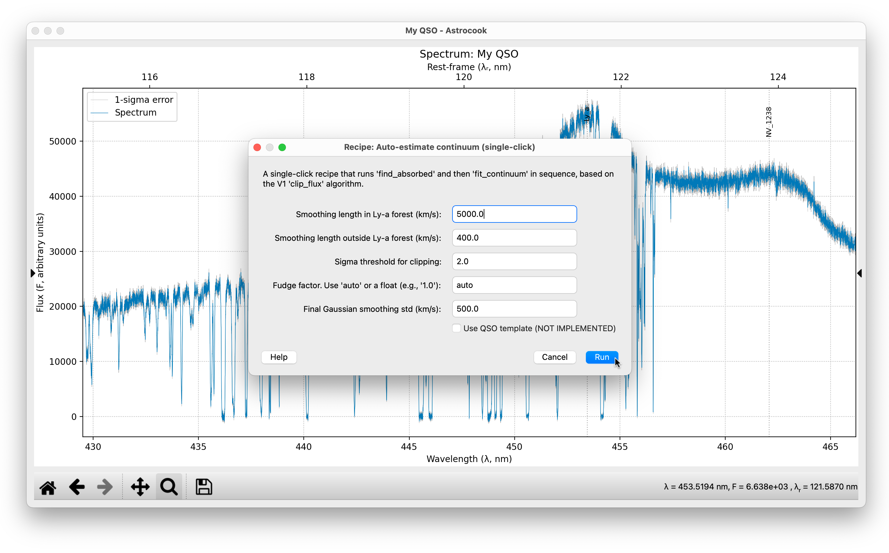
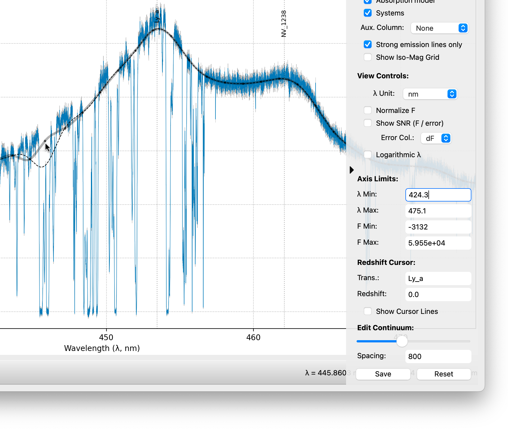

Continuum Fitting#
A robust continuum fit is the backbone of any absorption line analysis. Astrocook provides both automated algorithms for quick estimation and interactive tools for fine-tuning. This tutorial covers the Continuum menu and the manual editing tools.
1. Automatic Estimation#
For most quasar spectra, the automated pipeline provides an excellent starting point. It uses an iterative kappa-sigma clipping algorithm to distinguish absorption lines from the continuum.
Note
This recipe requires Emission Redshift (\(z_{em}\)) to be defined. If missing, Astrocook will automatically prompt you to set them via the Set Properties dialog before proceeding.
Go to Continuum > Auto-estimate Continuum….
Adjust the parameters if necessary:
Smoothing (Ly-a / Out): Defines the scale of the smoothing spline. The default
5000km/s for the Ly-alpha forest and400km/s for the red side usually work well.Kappa: The sigma threshold for clipping absorption (default
2.0). Lower values make the algorithm more aggressive at finding lines.Fudge: Leave as
auto. This calculates a correction factor to ensure the residuals of the unabsorbed regions are centered on zero.
Click Run.
Astrocook will generate a new continuum curve (black dashed line). If you have a model (absorption lines) already defined, it will automatically re-normalize it to match the new continuum.

Step-by-Step Method#
If you need more control, you can run the process in two steps:
Continuum > Find Absorbed Regions…: Creates a mask (
abs_mask) separating line/continuum.Continuum > Fit Continuum to Mask…: Interpolates the continuum only over the unmasked regions. This allows you to manually edit the
abs_mask(via Apply Expression) between steps if the automatic masking missed something.
2. Interactive Manual Editing#
Automatic fits sometimes fail near complex emission lines or spectral edges. You can correct these manually using the Right Sidebar.
Important
Always run an automatic estimate first (Step 1). While the manual editor can start from scratch, it is designed to refine an existing continuum curve. Starting from raw flux usually produces poor results.
Starting the Editor#
Look at the Edit Continuum section in the right sidebar.
Click the Start button.
Knots (black dots) will appear along the current continuum.
Modifying Knots#
Move: Left-click and drag a knot to adjust the continuum level at that wavelength.
Add: Right-click anywhere on the plot to add a new knot.
Remove: Right-click on an existing knot to delete it.
Controlling Stiffness (The Slider)#
The slider next to the Start button controls the knot density (spacing).
Slide Left: Increases density (knots are closer). This allows the continuum to follow sharper variations (e.g., on top of emission lines).
Slide Right: Decreases density. This makes the continuum smoother and stiffer.
Warning: Changing the slider re-samples the knots. If you have moved specific knots, adjusting the slider might reset their positions to the grid.

Saving#
When you are satisfied with the shape:
Click the Save button (which replaced “Start”).
The new continuum is saved to the session, and the knots disappear.
3. Power-Law Fitting#
For quasars, it is often useful to fit a power-law continuum (\(F_\lambda\propto\lambda^{-\alpha}\)) to estimate the underlying emission before determining the detailed shape.
Note
This operation assumes your spectrum is flux calibrated (the overall shape is physically meaningful). It also requires Emission Redshift (\(z_{em}\)) to be defined. If missing, Astrocook will automatically prompt you to set them via the Set Properties dialog before proceeding.
Go to Continuum > Fit Power-Law….
Regions: Enter a list of comma-separated wavelength ranges (in rest-frame nm) known to be free of emission lines.
Default:
128.0-129.0, 131.5-132.5, 134.5-136.0(standard windows outside the Lyman forest).
Click Run.
This creates a new column cont_pl which you can view or use as a baseline for further fitting.